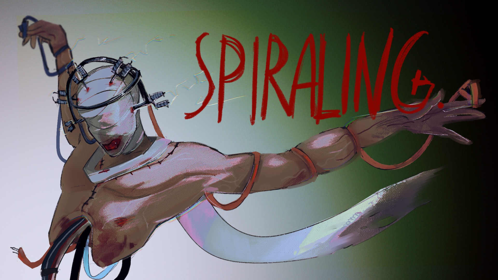
A first-person dark fantasy horror game
with visual-novel dialogue.
Heart and brain are our main electroconductive organs.
What if you could swap them for circuit boards?
The facility has one instruction:
Every change has a consequence. Death is part of the process.
Every procedure changes what you can touch, see and survive.
You always wake in the bag again, knowing more.
The more machine you become, the less human the world feels.
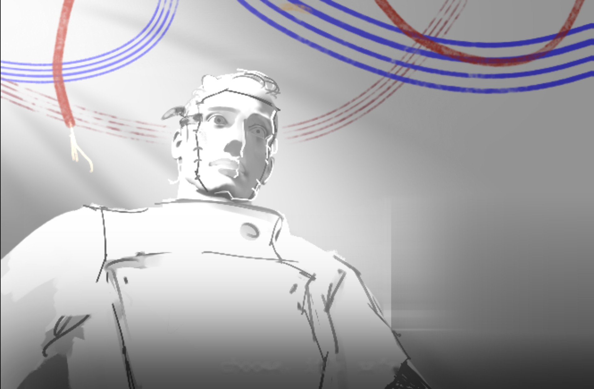
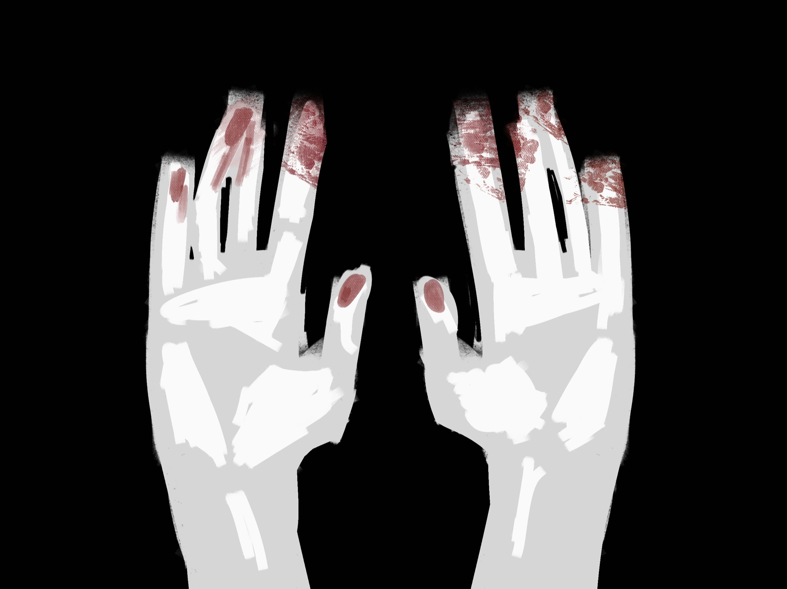
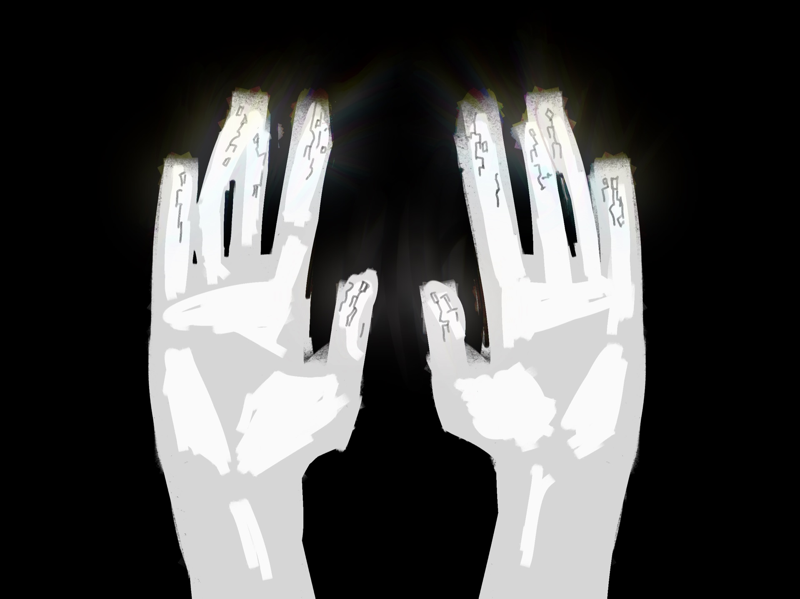
Without the modification, the same touch kills you.
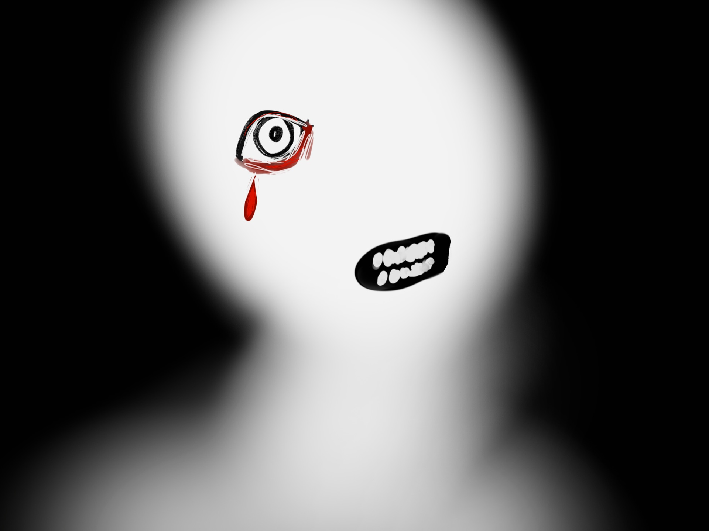
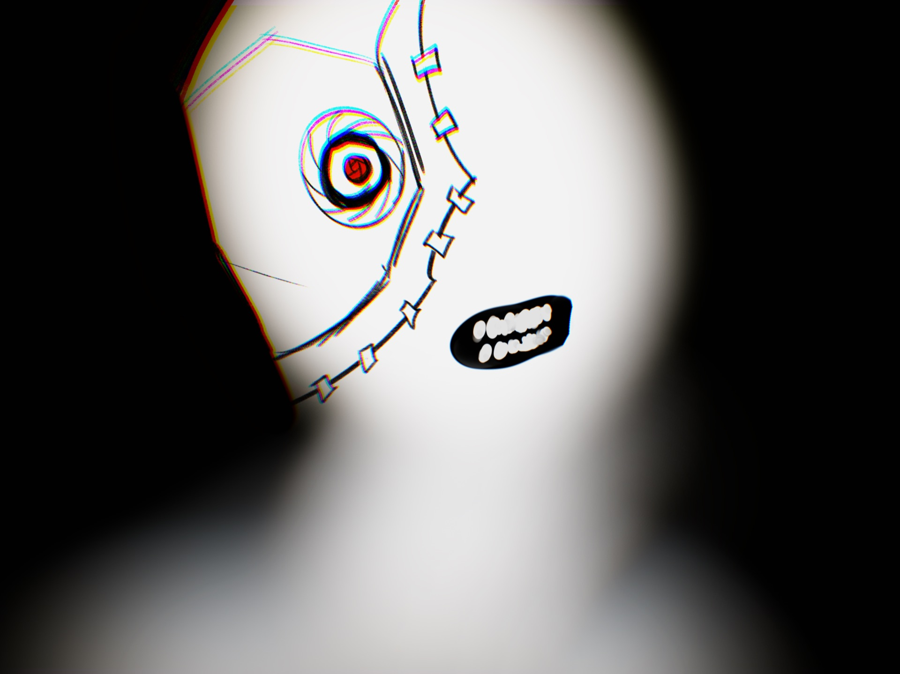
The power lines. The wards below. Everything.
You remember a little more.
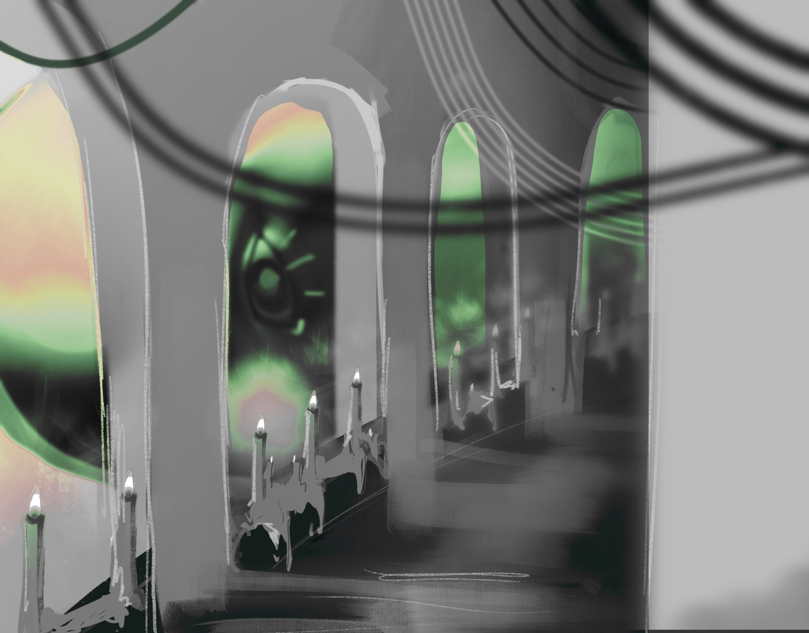
Some procedures show you who you were.
Wet porcelain, cables, surgical light, deep shadow.
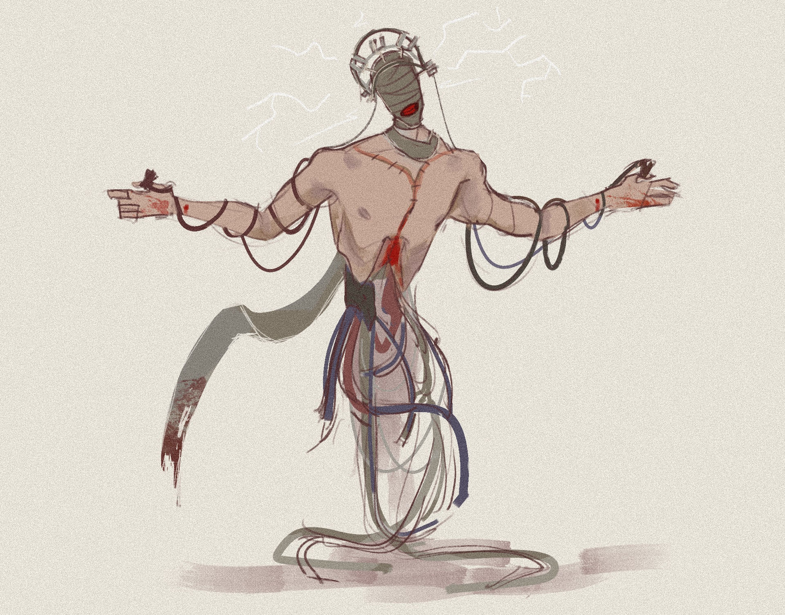
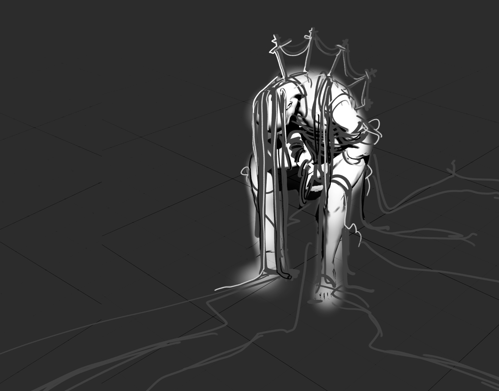
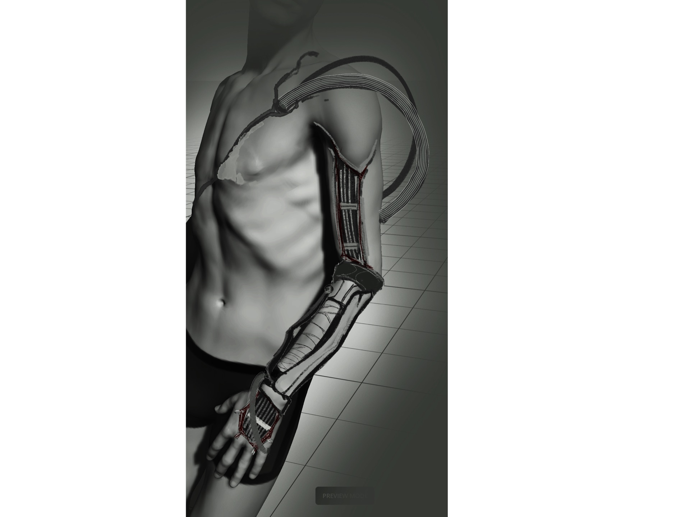
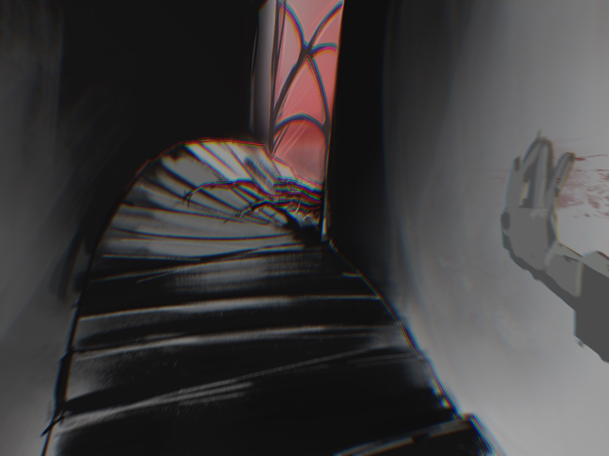
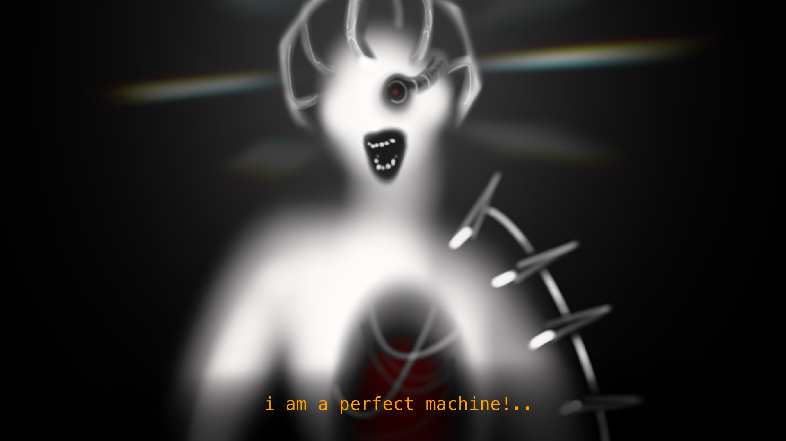
No microtransactions. In a game about buying a better body, nothing is for sale.
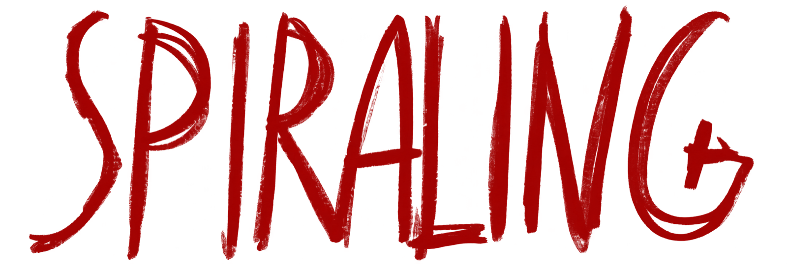
Thank you. Questions?
Your body survives. Your memory frays. Modifications stay after resurrection, but each death costs a memory: a flashback you can no longer replay, a face in the locket that fades. You get stronger by forgetting who you are.
Not a morality bar. Humanity is felt, not counted. As you modify your body, colour drains, the Doctor's voice loses warmth, your inner voice turns to machine text. And human dialogue options (plead, lie, comfort, remember) close, while machine options (comply, calculate) open.
Game concept: Kait, Katia & Yannis